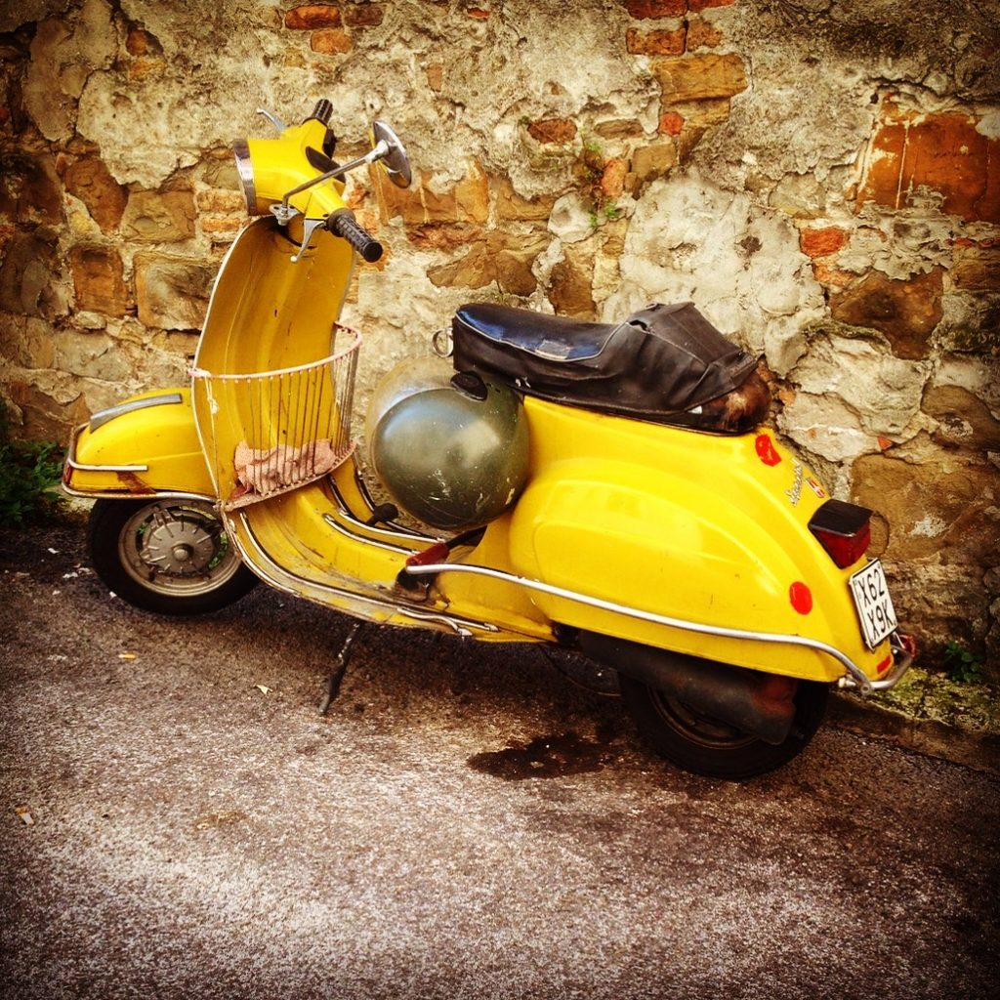

Yellow "vintage" Vespa
In Italy, distances are measured in kilometers, while speed (velocità) is measured in kilometers/hour instead of miles/hour. A quick way to convert from kilometers to miles is to divide by 5 and multiply times 3. This is not going to give you an exact number, but a number that is close enough to give you an approximate idea. {This is an excerpt from chapter 12 “Units and conversions” of the eBook “Italy from the Inside. A native Italian reveals the secrets of traveling in Italy”. Buy our eBook on Amazon and leave us a review! If it’s good, you’ll make us happy, if it’s bad, you’ll make us improve. Thank you either way!}